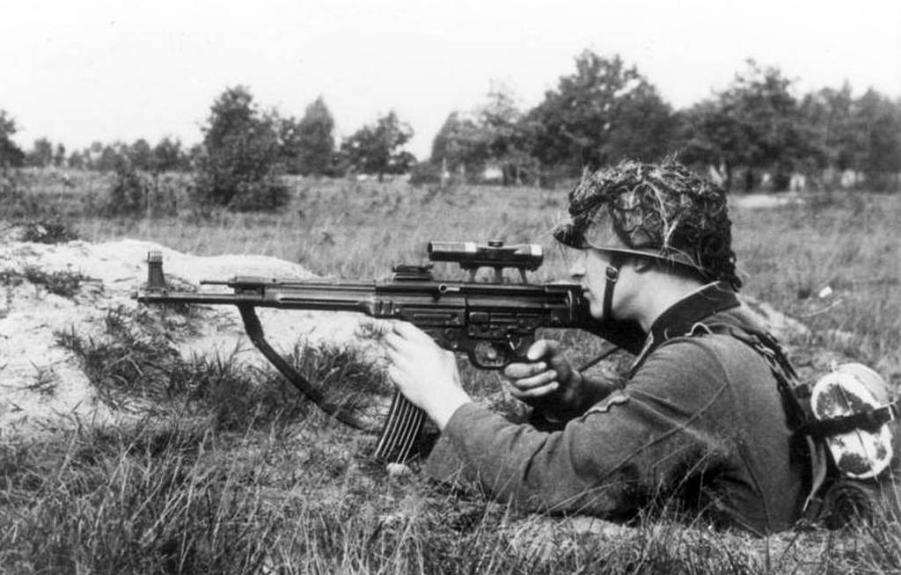
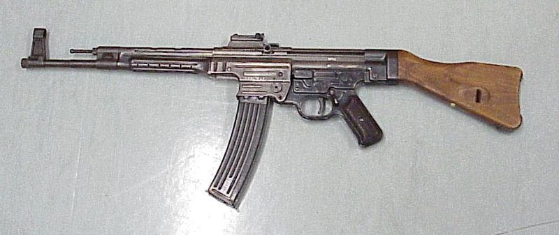
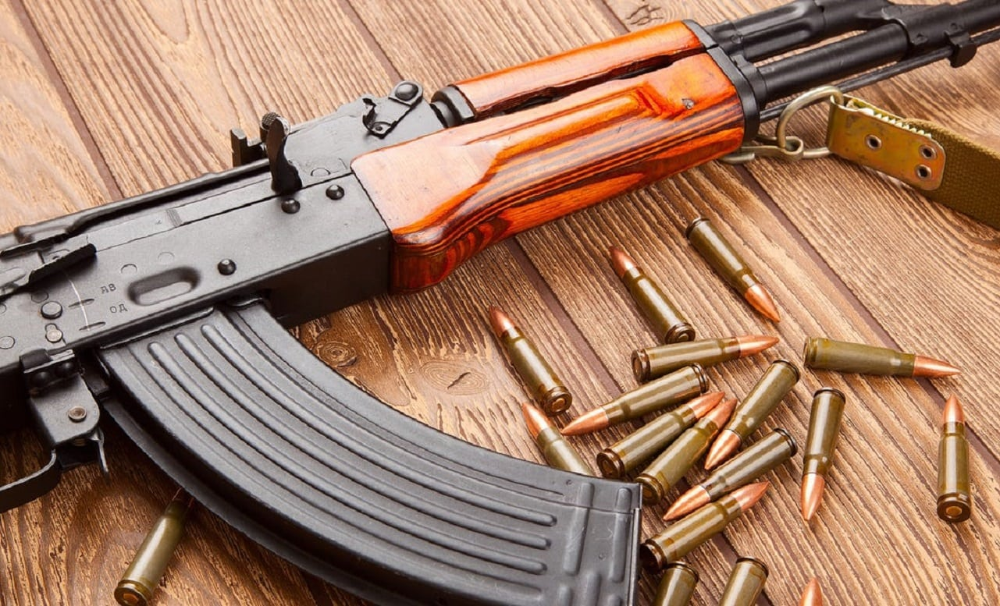
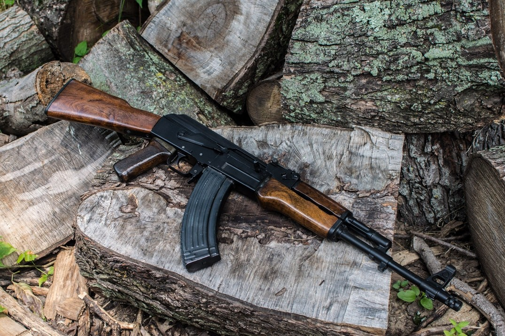
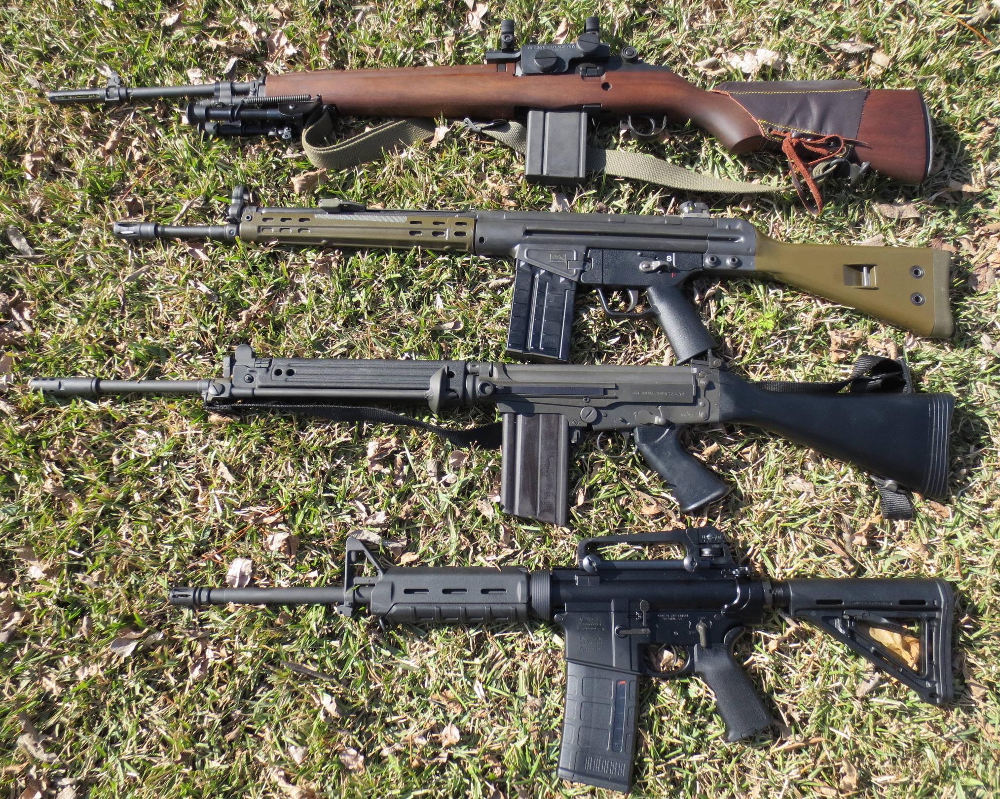
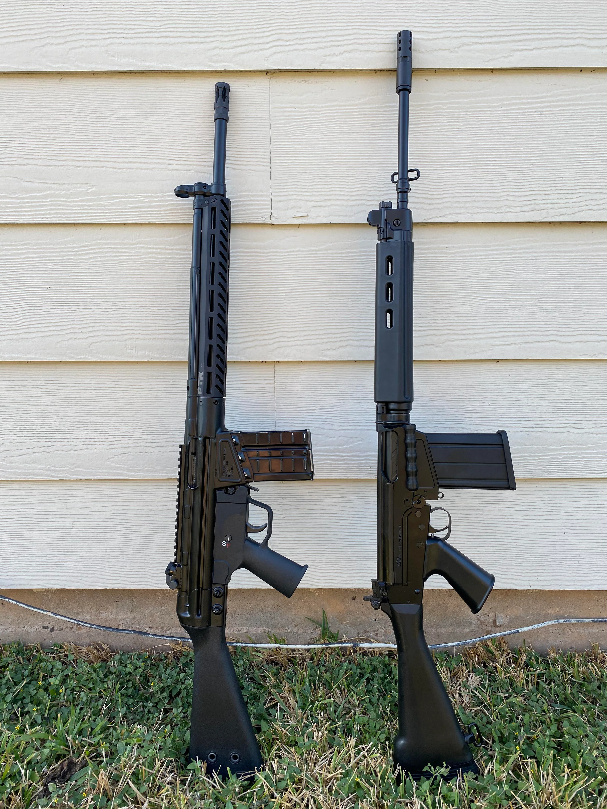

Sturmgewehr 44
The Germans were the first to pioneer the assault rifle concept during World War II, based upon research
that showed that most firefights happen within 400 metres (1,300 ft) and that contemporary rifles were
overpowered for most small arms combat. They would soon develop a select-fire intermediate powered rifle
combining the firepower of a submachine gun with the range and accuracy of a rifle.
The result was the Sturmgewehr 44, an improvement of the earlier Maschinenkarabiner 42(H), and approximately
half a million Sturmgewehrs were produced by the war's end. It fired a new and revolutionary intermediate
powered cartridge, the 7.92×33mm Kurz. This new cartridge was developed by shortening the standard 7.92×57mm
Mauser round and giving it a lighter 125-grain bullet, which limited range but allowed for more controllable
automatic fire.A smaller, lighter cartridge also allowed soldiers to carry more ammunition "to support the
higher consumption rate of automatic fire."
The Sturmgewehr 44 features an inexpensive, easy-to-make, stamped steel design and a 30-round detachable box
magazine. "This weapon was the prototype of all successful automatic rifles. Characteristically (and unlike
previous rifles) it had a straight stock with the barrel under the gas cylinder to reduce the turning moment
of recoil of the rifle in the shoulder and thus help reduce the tendency of shots to climb in automatic
fire. The barrel and overall length were shorter than a traditional rifle and it had a pistol grip to hold
the weapon more securely in automatic fire. "
The principle of this weapon—the reduction of muzzle impulse to get usable automatic fire within the actual
ranges of combat—was probably the most important advance in small arms since the invention of smokeless
powder."


AK-47
Like the Germans, the Soviets were influenced by experience showing that most combat engagements occur
within 400 metres (1,300 ft) and that their soldiers were consistently outgunned by heavily armed German
troops, especially those armed with Sturmgewehr 44 assault rifles. On July 15, 1943, a Sturmgewehr was
demonstrated before the People's Commissariat of Arms of the USSR. The Soviets were so impressed with the
Sturmgewehr, that they immediately set about developing an intermediate caliber automatic rifle of their
own, to replace the badly outdated Mosin–Nagant bolt-action rifles and PPSh-41 submachine guns that armed
most of the Red Army.
Kalashnikov rifles: AK-47, OTs-14, AK-74, AN-94, AK-12 and AEK-971
The Soviets soon developed the 7.62×39mm M43 cartridge, which was first used in the semi-automatic SKS
carbine and the RPD light machine gun. Hugo Schmeisser, the designer of the Sturmgewehr, was captured after
World War II, and helped develop the AK-47 assault rifle,[17] which would quickly replace the SKS and Mosin
in Soviet service. The AK-47 was finalized, adopted and entered widespread service in the Soviet army in the
early 1950s. Its firepower, ease of use, low production costs, and reliability were perfectly suited for the
Red Army's new mobile warfare doctrines. In the 1960s, the Soviets introduced the RPK light machine gun,
itself an AK-47 type weapon with a bipod, a stronger receiver, and a longer, heavier barrel that would
eventually replace the RPD light machine gun. The AK-47 has been continually worked upon, and improved. The
AKM, AK-74, and AK-12 were all designed by Mikhail Kalashnikov, and have all been service rifles in the
Soviet Union, and the later Russian federation.


Battle rifles
The U.S. Army was influenced by combat experience with semi-automatic weapons such as the M1 Garand and M1
Carbine, which enjoyed a significant advantage over enemies armed primarily with bolt-action rifles.
Although U.S. Army studies of World War II combat accounts had very similar results to that of the Germans
and Soviets, the U.S. Army failed to recognize the importance of the assault rifle concept, and instead
maintained its traditional views and preference for high-powered semi-automatic rifles. At the time, the
U.S. Army believed that the Sturmgewehr 44 was "intended in a general way to serve the same purpose as the
U.S. carbine" and was in many ways inferior to the M1 carbine, and was of "little importance".
After World War II, the United States military started looking for a single automatic rifle to replace the
M1 Garand, M1/M2 Carbines, M1918 Browning Automatic Rifle, M3 "Grease Gun" and Thompson submachine gun.
Early experiments with select-fire versions of the M1 Garand proved disappointing. During the Korean War,
the select-fire M2 Carbine largely replaced the submachine gun in U.S. service and became the most widely
used Carbine variant. Combat experience suggested that the .30 Carbine round was under-powered. American
weapons designers reached the same conclusion as the German and Soviet ones: an intermediate round was
necessary, and recommended a small-caliber, high-velocity cartridge.
American M14
Senior American commanders had faced fanatical enemies and experienced major logistical problems during
World War II and the Korean War, and insisted that a single powerful .30 caliber cartridge be developed,
that could be used by the new automatic rifle, and also by the new general-purpose machine gun (GPMG) in
concurrent development. This culminated in the development of the 7.62×51mm NATO cartridge and the M14 rifle
which was basically an improved select-fire M1 Garand with a 20-round magazine. The U.S. also adopted the
M60 GPMG, which replaced the M1919 Browning machine gun in major combat roles. Its NATO partners adopted the
FN FAL and Heckler & Koch G3 rifles, as well as the FN MAG and Rheinmetall MG3 GPMGs.

